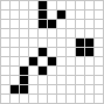

The following animated gif shows an eater eating gliders over and over again. The eater eats the glider then "repairs" itself.

More information on eaters.
The following animation shows a representation of how the evolution of the pattern works. It shows the first seven timesteps, and runs for approximately 40 mins. I don't expect anyone to have the time to watch it all the way through! I have ideas for how I can make the animations run more quickly.